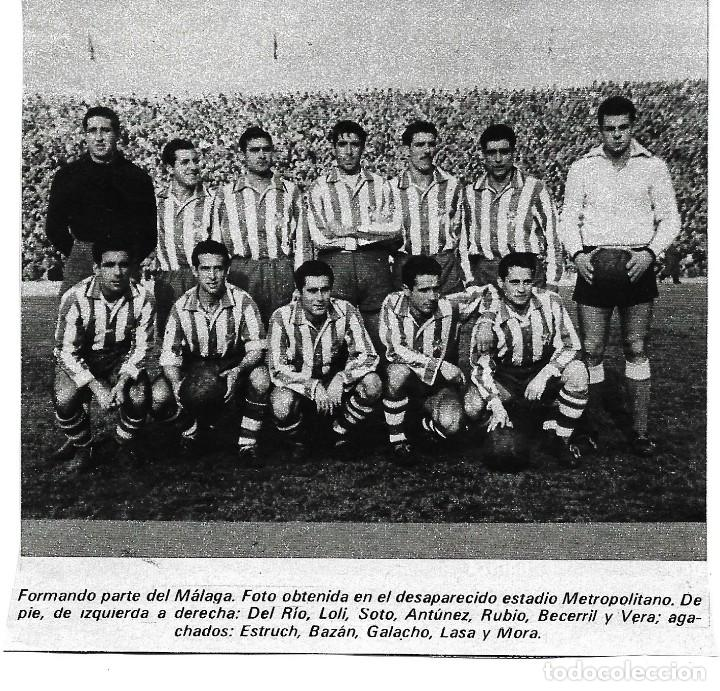
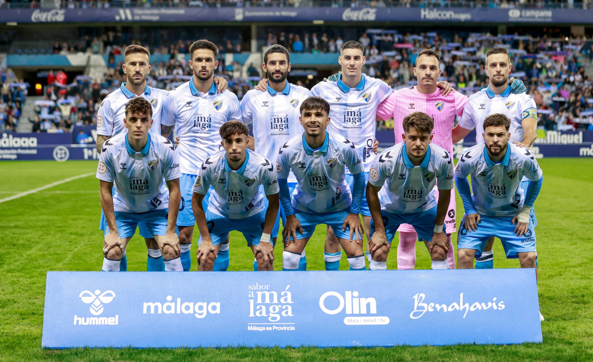

Quienes Somos

Fundación y primeros años del club
El Málaga Club de Fútbol, S.A.D., es un club de fútbol español con sede en la ciudad de Málaga, en la comunidad autónoma de Andalucía. Su primer equipo masculino compite en la LaLiga Hypermotion (Segunda División) en 2024-25, mientras que su equipo femenino lo hace en Segunda Federación. El Málaga Club de Fútbol actual se fundó como Club Atlético Malagueño el 25 de mayo de 1948 y se convirtió en sociedad anónima deportiva el 29 de junio de 1994 con el nombre de Málaga Club de Fútbol. A lo largo de los años, el club ha experimentado varias transformaciones, pero ha mantenido su esencia y su compromiso con el fútbol.
El primer equipo de la ciudad fue el Málaga Football Club, que disputó el 3 de abril de 1904 el primer partido de fútbol en Málaga del que existe constancia. A lo largo de los años, el club ha pasado por diversas denominaciones, incluyendo FC Malagueño, Real Málaga FC, Málaga Sport Club, Club Deportivo Malacitano y Club Atlético Malagueño, antes de convertirse en el Málaga CF que conocemos hoy.
La historia temprana del club estuvo marcada por altibajos, pero el espíritu y la pasión de sus seguidores nunca vacilaron. Desde sus humildes comienzos, el club ha crecido y se ha consolidado como una entidad respetada en el fútbol español.
Ascenso y Logros Internacionales
Los mejores momentos del club se dieron en la temporada 2002/03, año en el cual, tras ganar la Copa Intertoto de la UEFA, compitió en la Copa de la UEFA. El Málaga CF demostró su valía al enfrentar a equipos europeos de alto nivel y alcanzar la fase de cuartos de final del torneo continental. Durante esta campaña, el equipo mostró un rendimiento impresionante, eliminando a equipos como Gent (Bélgica), Willem II (Holanda) y Villarreal CF.
Especialmente destacada fue la campaña 2011/12, cuando el equipo consiguió su primer pase a la Liga de Campeones de la UEFA. La temporada 2012/13 se recordará siempre por la emocionante aventura en la Champions League, donde el Málaga CF llegó hasta los cuartos de final, eliminando a equipos como Panathinaikos, Zenit de San Petesburgo, AC Milan y FC Porto. Este logro fue un testimonio del talento y la determinación del equipo.
Estos logros internacionales no solo elevaron el perfil del club a nivel europeo, sino que también inspiraron a una nueva generación de aficionados al fútbol en Málaga y más allá. La pasión y el apoyo de los seguidores fueron fundamentales para el éxito del equipo en estos torneos prestigiosos.


Época recientes y transformaciones en el club
En los últimos años, el Málaga CF ha atravesado diversas fases de reestructuración. Tras la llegada de Sheikh Abdullah Al Thani en 2010 como máximo accionista, el club ha buscado recuperar su estabilidad y volver a la élite del fútbol español. Aunque se han enfrentado a desafíos económicos y deportivos, el club ha seguido luchando por mantener su posición y trabajar hacia un futuro más prometedor.
A pesar de enfrentar desafíos significativos, el club sigue siendo una institución emblemática con una base de aficionados apasionados. La apuesta por el desarrollo de jóvenes talentos a través de La Academia del MCF ha sido un pilar fundamental en su estrategia para el futuro. La academia se ha centrado en la formación de jóvenes jugadores, brindándoles las herramientas necesarias para alcanzar su máximo potencial tanto dentro como fuera del campo.
Además, el club ha trabajado arduamente para mejorar sus infraestructuras y recursos, asegurando que esté bien preparado para competir al más alto nivel. La dedicación y el esfuerzo continuo de todos los involucrados han mantenido viva la esperanza y el orgullo en el Málaga CF.